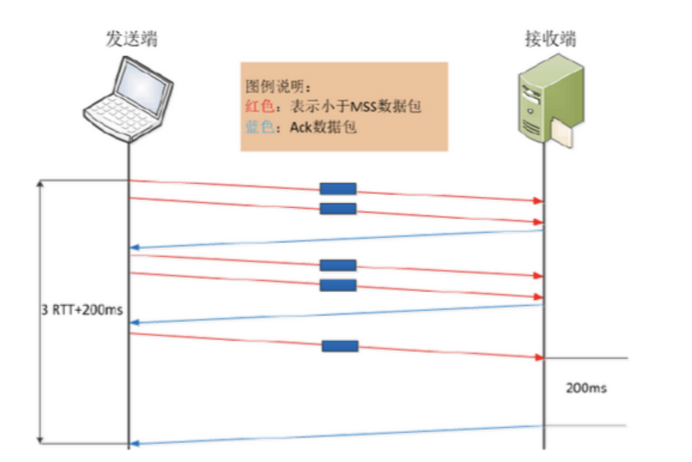

Nagle算法和延迟ack - 课堂笔记
Contents
原文: 深入浅出TCPIP之Nagle算法-腾讯云开发者社区-腾讯云
TCP的数据流大致可以分为两类，交互数据流与成块的数据流。交互数据流就是发送控制命令的数据流，比如relogin，telnet，ftp命令等等；成块数据流是用来发送数据的包，网络上大部分的TCP包都是这种包。
很明显，TCP在传输这两种类型的包时的效率是不一样的，因此为了提高TCP的传输效率，应该对这两种类型的包采用不同的算法。
总之，TCP的传输原则是尽量减少小分组传输的数量。
Nagle算法分析
Nagle算法主要用来预防小分组的产生。在广域网上，大量TCP小分组极有可能造成网络的拥塞。
Nagle时针对每一个TCP连接的。它要求一个TCP连接上最多只能有一个未被确认的小分组。在改分组的确认到达之前不能发送其他小分组。TCP会搜集这些小的分组，然后在之前小分组的确认到达后将刚才搜集的小分组合并发送出去。
有时候我们必须要关闭Nagle算法，特别是在一些对时延要求较高的交互式操作环境中，所有的小分组必须尽快发送出去。
我们可以通过编程取消Nagle算法，利用TCP_NODELAY选项来关闭Nagle算法。
来看看Nagle大致的逻辑：
|
|
通过上面的逻辑可以看到，如果是大量数据需要发送，大部分情况都可以填满一个MSS（也就不存在"小包"的问题），是不需要等待一个未确认包的。
Nagle算法是时代的产物，因为当时网络带宽有限。而当前的局域网、广域网的带宽则宽裕得多，所以目前的TCP/IP协议栈默认将Nagle算法关闭
|
|
延迟确认机制（TCP delayed acknowledgment）
wiki的解释https://en.wikipedia.org/wiki/TCP_delayed_acknowledgment
1989 RFC 1122定义，全名Delayed Acknowledgment，简称延迟ACK，翻译为延迟确认。
与Nagle算法一样，延迟ACK的目的也是为了减少网络中传输大量的小报文数，但该报文数是针对ACK报文的。
一个来自发送端的报文到达接收端，TCP会延迟ACK的发送，希望应用程序会对刚刚收到的数据进行应答，这样就可以用新数据将ACK捎带过去。
当Nagle算法遇到Delayed ACK
在一个有数据传输的TCP连接中，如果只有数据发送方启用Nagle算法，在其连续发送多个小报文时，Nagle算法机制会减少网络中的小报文数量。这就意味着，同样传输相同大小的应用数据，在网络上的报文个数却不同。
举个例子，发送端需要连续发送5个写操作（应用程序将数据写入到缓冲池的动作）的小报文，首先发送第一个，由于Nagle算法的作用，在未收到第一个报文确认前，发送端在等待写操作的同时进行读操作，接收端并未启用延迟确认（视TCP delay ACK时间为0），尽管刚收到该报文就发出确认，但由于网络延时的原因，在收集齐另外4个小报文后，发送方才收到了第一个报文的ACK，则后面的4个报文会一起发送出去（大小未超过MSS），接收端再次ACK。

在上述发送5个小报文的过程中，只用了4个报文就实现了。但如果发送端未启用Nagle算法，完成整个过程则至少需要8个报文或10个报文才能实现，这里接收端未启用延迟确认，如下图所示。启用Nagle算法和未启用Nagle算法的场景中，从完成数据发送的时间来看，未启用Nagle算法的方式花费的时间会更长一些，如下图所示。这里基本看到了Nagle算法的好处了。

还是上述数据传输场景，*发送端未启用Nagle算法，但接收端延迟确认默认时间为200ms，来看看这时的情况。RFC 1122规定，Delayed ACK对单个的小报文可以延长确认的时间，但不允许有两个连续的小报文不被确认。所以，当发送端连续发送两个报文后，接收端必须给予确认。*这时的数据传输情况如下图，只有当第5个报文到达后，接收端由于延迟确认机制，会导致200ms的延时存在。

接下来看看，当Nagle算法遇到Delayed ACK时会是什么情况。按照常理推断，两种深思熟虑的功能设计，应该是1+1>2的效果。具体如何，还是请事实说话。
先继续看上面的假设场景，该场景要求发送端向接收端发送5个连续的写操作数据，但网络延时较大，同时发送端启用Nagle算法，接收端Delayed ACK默认为200ms。
发送方先发出一个小报文，接收端收到后，由于延迟确认的机制，等待发送方的下一个报文到达。而发送方由于Nagle算法机制，在未接收到第一个报文的确认前，不会发送已读取到的报文。 在这种场景下，暂不考虑应用处理时间，完成整个数据传输所需时间为2RTT+400ms，貌似情况不是特别糟糕。

如果上述其他条件不变，发送方应用写操作延时稍微变大，或发送端的应用操作延时稍大，我们再看看，完成这个操作的延时情况。
发送方先发出一个小报文，接收端收到后，由于延迟确认的机制，等待发送方的下一个报文到达。由于发送方应用数据写操作延时较大，在经过RTT+200ms后，读取到了下一个需要发送的内容，此时接收到了第一个报文的确认，而网络中未有没被确认的报文，发送方需要再将第二个小报文发送出去，以此类推，直到最后一个小报文被发送，且接收到该报文的确认，此时整个数据传输过程完成。
在这种情景下，完成整个数据传输所需时间则为5RTT+5*200ms，明显增大了不少。如果相同情境下，有成千上万的小报文发送，则整体使用时间相当可观了。

在实际情况下，如果发送方程序做了一系列的写、写、读操作的现象，这样的操作都会触发Nagle和延迟ACK算法之间的交互作用，应该尽量避免。
应用场景：
1.对于实时性要求很高的交互上，我们不能使用nagle算法，比如FPS射击类PVP对抗类游戏，或者MMO类的对实时要求很高的游戏开发来说是显而易见需要禁掉的，因为假如玩家的一次移动，或者状态同步到服务器，加上协议头，包体不会太大，如果使用Nagle算法，后果将是，客户端本来完成一次射击动作，或者释放技能的动作却因为此算法，因为发送包体较小，被放置到缓冲区，等其他包到达可发送了才一起发送到服务器端，那么你不坑队友，还能有谁你？
2.对于发送接收的业务，但是每次发送的包体又是很小的，对于业务的实时性不是非常强的，我们可以使用nagle算法，将小包组成大包统一发送，减少交互次数。
Author David
LastMod 2023-07-22